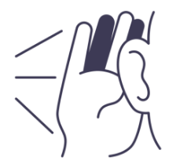
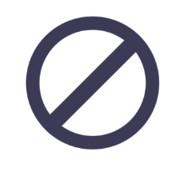
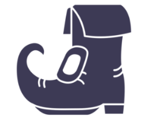

Responding to question...
Generate a Question
Listen & Reflect
It’s hard to pay attention to someone’s words when you’re busy reminding yourself to make regular eye contact. If these sorts of behaviors would require a significant habit change, you can instead, let people know that you’re on the non-reactive side, and ask for their patience and understanding.
Never Make Assumptions
Respectfully ask the person speaking for clarification if they say something you don’t understand or are unsure about. Most of the time, people believe the other person means one thing, while they really might mean something entirely different. There is nothing wrong with having questions as long as you ask them with kindness.
Choose Your Words Wisely
Think about the question and your answer for at least 10 to 20 seconds… or more.
Something that may be logical to you may not make sense to someone else.
Words sometimes do more harm than good, which is why you want to use them with care.
The vast majority of people are reluctant to give someone a second chance.
Put Yourself in the Shoes of the Other Person
The worldview of people influences their responses and perceptions of events. Take a step back and try to put yourself in the shoes of the person you’re speaking with.
